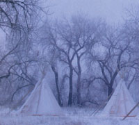
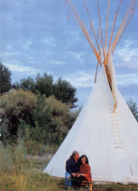
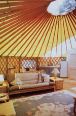
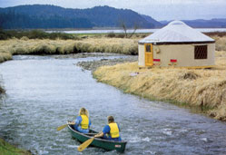
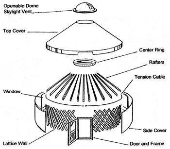

Nomadic people have used portable tipis and yurts for thousands of years. These simple, circular structures provide snug, low-cost shelter. If you're looking for a spacious "tent" for family camping trips, temporary housing for weekend breaks from the rat race, or even a unique studio or guest quarters for your own back yard, these easily constructed, Earth-friendly structures may be the perfect shelter.
TALL TIPIS
Imagine a circular room. 16 feet across with ceilings 12 feet high; a room, filled with lush, diffused light, that can be built in less than an hour and transported in the back of your pickup. Now imagine this room functions as your sole living space for cooking, sleeping and storage.
Many- modern tipis include raised wooden floors for the sleeping area. This addition to an otherwise austere interior keeps bedding and clothes free from creepy-crawlies and the inevitable dust and dampness brought in from outside. A fire pit or carefully vented small woodstove in the tipi s center provides heat during winter months or cool mornings and evenings.
Living in a tipi is an exercise in simplicity. The simple, graceful lines lend a peaceful aura to the tall, spacious interior. A small fire or kerosene lantern provides adequate light for cooking, reading or guitar playing. Kate Robbins, a counselor from Spokane, Washington, imagines the amber glow of a tipi's interior to be womb-like. In his mid-20s, Harry Janicki of Bend, Oregon, lived in a tipi for five years. "Living in a tipi was the best experience of my life," he says. "It taught me patience and what was really important to survive: shelter." When you live in a tipi there aren't 6-inch-thick walls separating you from the elements-just a thin skin of canvas. "You're more in tune with your environment living through all the seasons in a tipi," Janicki says.
Prior to the introduction of horses to North America, tipis were small, 8 to 14 feet in diameter, since the poles and buffalo skin coverings were pulled on travois from one encampment to another by dogs or women. Once the American Indian plains people acquired horses, tipi designs expanded into the shape and style we're familiar with today. By the late 1800s, after the near extermination of the buffalo herds, tipi covers made from bolts of canvas provided by the U.S. gov ernment replaced the 10 to 14 buffalo skins needed for the earlier style.
Tipis are a marvel of engineering simplicity. In about an hour, two people can easily erect a 16-foot-diameter tipi with 22foot-long poles. The conical shape of the structure makes it stable in the high winds that often blow briskly across the Great Plains, and closable smoke flaps keep driving rains outside. Tipis routinely are transported to powwows, barter fairs and rendezvous on a truck's carrying racks.
Tipis are made up of four basic components: the poles, the canvas cover, and the rope and dowels that hold the tipi together. To erect a tipi, three poles are lashed together to form a tripod against which the other poles lean. Next the rope securing the tripod is wound around the intersection of all the poles. No ladder is needed. One person walks three or four times around the outside of the poles, with rope in hand, occasionally snapping the rope to keep it high up at the intersection. The rope is then brought to the inside of the tipi circle and yanked firmly to lock it between two of the tightly-bound poles.
To put the canvas on the tipi poles, the cover is laid out on the ground, the lifting pole is laid over the cover's middle and the cover is tied to the pole. After rolling each side of the canvas toward the lifting pole, the pole's end is set in place among the others. If two people are erecting the structure, each takes a side of the tipi cover and pulls it around the poles until the sides meet in the middle on the far side. Dowels are used to "button" the two sides together. Last, two slightly smaller poles are inserted into the smoke-hole flaps on the top front of the cover. These poles allow the smoke flaps to be opened, closed and positioned for better smoke draft.
A tipi's basic building technique is easy and can be accomplished (with the exception of the tripod, which requires two people to erect) by even a smallish person without bulging biceps. Depending on the weather and how long the tipi will be left standing, a liner called a dew cloth can be strung inside the tipi.
The liner's effect is threefold: It keeps morning dew or heavy rain from dripping on inhabitants, provides some insulation in cold weather and helps create an updraft to pull the smoke straight up and out the smoke hole.
Tipi poles are made from lodgepole pine trees, which grow all over the western United States and in some southeastern states. Their toothpick-like appearance and light weight make them the natural choice for tipi poles. The poles are usually harvested in the spring or fall when the sap is moving, making barkstripping easier. The branches are easily removed with a hatchet or ax. After peeling the bark, the knots where the branches were need to be sanded to a very smooth finish. Even small, sharp protrusions will rip the canvas skin.
While there may be only one good type of wood for making tipi poles, there are many manufacturers of canvas covers and accessories. You can purchase a tipi with or without a decorative canvas. Dozens of beautifully rendered, American Indian inspired designs are available, or you can paint your own with a water-based acrylic paint.
STURDY YURTS Yurts may not be as familiar to Americans as tipis, but these sturdy, spacious dwellings are equally appealing. Inexpensive, easy-to-assemble and comfortable even in cold weather, yurts suit a variety of housing needs.
For eons, nomads following herds of yak and sheep have used flexible saplings, such as willow, as framework for their portable homes, called yurts. The coverings for traditional yurts, known as gers (rhymes with "hairs") in Mongolia, are made of wool felt; as many as eight covers may be piled on top of each other to combat the 50-degrees-below-zero winter weather.
Although a yurt has more structural pieces than a tipi and its engineering principles are more complicated (see an exploded view of a yurt on Page 60), a yurt large enough for a family of four can be transported to the site in a pickup and can be erected in less than a day.
The strength of most modern yurt frames comes from a tension cable that encircles the trellis-like frame of the walls, holding it to the desired diameter. The roof rafters push down and out on the cable, creating a balance of tensions, which holds the whole structure together. A round compression roof ring attaches to the roof rafters. In a traditional yurt, the framework is covered with felt mats and tied down with hair ropes to prevent the mats from blowing off in stiff winds. A yurt's door can be wooden and attached to the framework, or a hanging felt mat or woven rug.
The modern yurt made its North American debut in 1962 when Bill Coperthwaite, a California high-school mathematics teacher, led his class in a study of roof design. (For more about Coperthwaite's Yurt Foundation and the wood-sided yurt building plans they offer, visit www. yurtsource. com . )
Forty years later, several U.S. companies make and sell yurts. The style has remained much like those found on the Asian plains. Gone are the heavy, felt mats and sapling frames; in their place are engineered roof trusses, NASA-inspired insulation and lightweight, fire-and-water resistant canvas.
Most yurt manufacturers recommend building a founda tion floor or deck for the yurt. Some include plans on building the floor for specific yurt sizes.
Some models of canvas-covered yurts, including the decking, can be moved from site to site with relative ease. "We moved our yurt a number of times while our children were young," says Jessica Tenhass of Homer, Alaska. "The move was less traumatic because the house remained the same." A yurt can be ready for habitation in a week, deck included.
You don't need to be a master carpenter, but some basic carpentry skills are required. People have erected permanent yurts, sometimes even in communities where there are building code standards. Pacific Yurts paved the way for this by designing their yurts to conform to the Uniform Building Code regarding structural load requirements. If you plan to use your yurt as a permanent residence, be sure to check local building codes and zoning restrictions before you buy. Insulation packages can be purchased from the manufacturers of most yurts. The insulation allows the dwelling, heated by a wood or oil stove, to stay comfortable even during Alaskan winters. Tenhass says she brought both of her January-born infants home from the hospital to her yurt. "It felt like being in a cozy nest, a very centering family experience."
Both tipis and yurts foster a sense of community and equality: It is impossible to be at the head of the table when you are sitting in a circle. (The Web sites listed in the Resource boxes on Pages 57 and 60 offer lots of photos of circle living in tall tipis and sturdy yurts.) Remember childhood days spent in your own private hideaway made of blankets and chairs? If you could use a private space to play and dream, a tipi or yurt may be your perfect choice. Mother Earth News editorial assistant Heidi Hunt spent many enjoyable weekends in her tipi in northeast Washington state.
Tipi Sources Tipi kit prices vary depending on the weight of the canvas, whether or not it has been treated for water, flame and mildew resistance, and the inclusion of poles and other accessories in the kit. Earthworks Tipis
33 N. Uncompahgre
Montrose, CO 81401
(800) 288-3190
www.advancecanvas.com
12-footdiameter: $324; 28-foot: $1,687.
NomadicsTipi Makers
17671 Snow Creek Road
Bend, OR 97701
(541) 389-3980
www.tipi.com
12-foot-diameter: $270; 26foot: $1090.
Tipi pole sets from $205 to $350.
Reese Tipis
2291-) Waynoke Road
Colorado Springs, CO 80915
(866) 890-8474 or (719) 265-6519
www.reesetipis.com
13.5-footdiameter: $695; 24-foot:
$1,974. Tipi pole sets range from
$184.50 to $677.50.
Reliable Tents & Tipis
120 N. 18th St.
Billings, MT 59101
(800) 544-1039
www.reliabletent.com
9-foot-diameter: $175; 24-foot: $939.
Tipi pole sets from $120 to $433.
RK Lodges
PO. Box 567
Hector, MN 55342
(320) 848-6363
www.rklodges.com
12-foot-diameter: $270; 22-foot: $1360.
Spring Valley Lodges
North 3515 Hwy. F
Brodhead, WI 53520
(608) 897-8474
www.springvalleylodges.com
10-footdiameter: $320; 20-foot: $1,064.
Don Strinz Tipi, Inc.
2325 "0" St. Road
Milford, NE 68405
(800) 525-8474
www.strinztipi.com
10-foot-diameter: $600; 22-foot: $2,000.
Tentsmiths
PO. Box 1748
Conway, NH 03818
(603) 447-2344
wwwtentsmiths.com
12-foot-diameter: $556; 24-foot: $1,390.
Trapline Lodges
FO. Box 573
Butte, MT
(406) 723-7670
www.trapline.com
12-footdiameter: $350; 24-foot: $1,800.
Tipi pole sets from $168 to $440.
Yurt Sources Styles and materials differ among yurt manufacturers. Most require a wooden deck for support. One company, Singing Horse, designs portable yurts. Decking is not included in any of the yurt packages.
Advance Canvas
28 W. South Fourth St.
FO. Box 1626
Montrose, CO 81402
(800) 288-3190
www.advancecanvas.com
16-footdiameter: $4,340; 30-foot:
$8,100. Insulation, snow-and-wind load packages, gutters, specialty doors and windows are extra.
Nesting Bird
731 W. Park Ave.
Port Townsend, WA 98368
(360) 385-3972
www.nestingbird.com
16-foot-diameter: $4,825; 30-foot: $9,075.
Insulation and specialty options extra.
Nomad Shelter Yurts
389 Grubstake #1
Homer, AK 99603
(907) 235-0132
www.nomadshelter.com
16-foot-diameter: $4,250; 30-foot:
$11,500. Insulation packages, specialty doors and windows are extra.
Pacific Yurts
77456 Hwy. 99S
Cottage Grove, OR 97424
(541) 942-9435
www.yurts.com
12-foot-diameter: $3,350; 30-foot: $8,285.
Insulation packages, snow and-wind kit, gutters and other options extra
Singing Horse Designs
PO. Box 1915
Kent, OH 44240
(330) 678-0011
my.raex.com/~yurts
10-foot-diameter: $950; 16-foot: $1,750.
Wooden doors extra.
Red Sky Shelters manufactures a portable, canvas shelter that is part yurt, part dome. To see a sample of their product, call (828) 225-7179 or visit their Web site at www.redskyshelters.com.
For information on permanent, woodsided yurts, contact Oregon Yurtworks at (800) 2118470 or wwwyurtworks. com; or Vital Designs at (888) 225-9878 or www.yurtpeople.com.
|
 COURTESY PACIFIC YURTS (2) COURTESY REESE TIPIS (2) |
 COURTESY PACIFIC YURTS A couple enjoys a fire outside their tipi in southeastern Colorado. |
 Sunlight streams into the spacious interior of a 30-foot-diameter yurt in Oregon. |
|
 A 20-foot-diameter yurt hugs the shore of Dorena Lake in northwest Oregon. |
 |
|